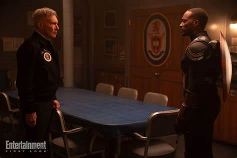

"Captain America: Brave New World" est l'un des films les plus attendus de la phase cinq du Marvel Cinematic Universe (MCU). Succédant aux événements de "Avengers: Endgame" et de la série "Falcon et le Soldat de l'Hiver", ce nouvel opus marque une étape significative dans l'évolution du personnage de Sam Wilson en tant que Captain America. Cet article présente une analyse approfondie des informations disponibles sur le film, y compris les bandes-annonces, le casting, le synopsis et les implications pour le MCU.
Bandes-annonces officielles
Plusieurs bandes-annonces officielles de "Captain America: Brave New World" ont été publiées, offrant un aperçu des enjeux narratifs et visuels du film :
- Bande-annonce officielle (publiée le 27 janvier 2025)
- Featurette du film (publiée le 21 janvier 2025)
- Extrait : Le Red Hulk en action (publié le 27 janvier 2025)
Ces vidéos offrent un aperçu de l'esthétique du film, des thématiques explorées et des personnages introduits, suscitant l'intérêt des fans et des critiques.
Date de sortie
"Captain America: Brave New World" est prévu pour une sortie en France le 12 février 2025. Aux États-Unis, le film sera disponible à partir du 14 février 2025. Cette sortie mondiale coordonnée témoigne de l'importance du film pour les studios Marvel et leur engagement envers le public international.
Distribution
Le film réunit un casting de renom, renforçant la profondeur et la complexité des personnages :
- Anthony Mackie : Sam Wilson / Captain America
- Harrison Ford : Président Thaddeus "Thunderbolt" Ross
- Giancarlo Esposito : Sidewinder
- Sebastian Stan : Bucky Barnes / Winter Soldier
- Emily VanCamp : Sharon Carter
- Danny Ramirez : Joaquín Torres / Falcon
- Carl Lumbly : Isaiah Bradley
- Shira Haas : Sabra
- Tim Blake Nelson : Samuel Sterns / Le Leader
- Liv Tyler : Elizabeth "Betty" Ross
La présence de ces acteurs talentueux promet une interprétation nuancée des personnages et une dynamique intéressante à l'écran.
"Harrison Ford dans le rôle du président Ross est un de ces moments qui vous donnent l'impression de devoir vous pincer la peau"
-Kevin Feige, président de Marvel Studios.
Équipe de production
Le film est réalisé par Julius Onah, connu pour son travail sur "The Cloverfield Paradox". Le scénario est co-écrit par Julius Onah, Malcolm Spellman, Dalan Musson, Rob Edwards et Peter Glanz. La composition musicale est assurée par Laura Karpman, apportant une dimension sonore essentielle à l'ambiance du film.
Synopsis Officiel
Après avoir assumé le rôle de Captain America, Sam Wilson est confronté à un incident international impliquant le nouveau président des États-Unis, Thaddeus Ross. Face à un complot mondial menaçant la paix et la stabilité, Sam doit découvrir la vérité derrière ces événements et affronter des adversaires puissants, dont le redoutable Leader. Le film explore les défis auxquels il fait face en tant que nouveau symbole de l'Amérique.
Le President Ross Face A Captain America
Contexte dans le Marvel Cinematic Universe
"Captain America: Brave New World" est le 35e film du MCU et le cinquième de la phase cinq. Il fait suite aux événements de "Captain America: Civil War" et de la série "Falcon et le Soldat de l'Hiver". L'élection de Thaddeus Ross à la présidence pourrait introduire de nouveaux enjeux politiques, influençant les relations entre les super-héros et les institutions gouvernementales. L'introduction du Leader en tant qu'antagoniste ouvre la voie à de nouvelles menaces et développe davantage l'univers des personnages liés à Hulk.
Le film explore également les défis auxquels Sam Wilson fait face en tant que premier Captain America noir, abordant des questions de race, d'identité et de justice sociale. Cela ajoute une profondeur supplémentaire à l'histoire et reflète les préoccupations contemporaines.
Enfin, "Brave New World" joue un rôle crucial dans la préparation des futurs événements de la phase cinq, notamment "Avengers: Doomsday" et "Avengers: Secret Wars". Le succès du film pourrait déterminer l'orientation future du MCU.
Réception et attentes
Les attentes autour du film sont élevées, tant du côté des fans que des analystes. Le budget alloué, d'environ 180 millions de dollars, témoigne d'une production ambitieuse malgré une légère réduction par rapport aux prévisions initiales. Les premiers retours sur les bandes-annonces sont positifs, mettant en avant l'évolution du personnage de Sam Wilson et les thématiques abordées. Les prévisions au box-office sont optimistes, avec des estimations suggérant un excellent démarrage lors du week-end d'ouverture.
Conclusion
"Captain America: Brave New World" s'annonce comme une étape majeure dans le développement du Marvel Cinematic Universe. En explorant les défis que représente la succession du rôle de Captain America et en introduisant de nouveaux antagonistes, le film promet une expérience cinématographique riche et engageante. Sa sortie est attendue avec impatience par les fans du monde entier, et son impact sur l'univers Marvel pourrait être significatif pour les phases à venir.
Qu'attendez-vous le plus de ce nouvel opus de Captain America ? Pensez-vous que Sam Wilson sera à la hauteur du rôle de Captain America ? Quels sont vos pronostics sur les futures intrigues du MCU après ce film ? N'hésitez pas à partager vos pensées et théories dans les commentaires ci-dessous !